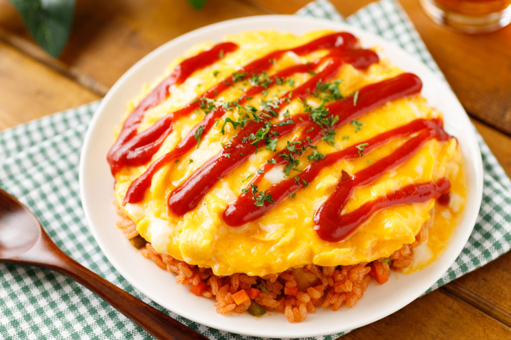

Omurice, a fluffy omelet draped over savory fried rice. It is a comfort food with a golden touch.Ramen, a Japanese noodle soup featuring a rich, savory broth, chewy noodles, and toppings like pork, egg, and green onions. Roll Cake, a light, fluffy sponge wrapped around a silky vanilla cream. Simple, elegant, and irresistibly airy. Dorayaki, a beloved Japanese treat made of two fluffy pancakes filled with sweet red bean paste.Melon Pan, a sweet Japanese bun with a soft, fluffy interior and a crisp, cookie-like crust. It was named for its melon-like appearance, not its flavor.Wagashi Mochi, a traditional Japanese sweet made from soft, chewy rice dough filled with delicate flavors like sweet red bean; an elegant bite of cultural artistry.Taiyaki, a fish-shaped Japanese pastry filled with sweet red bean, custard, or chocolate. It is crispy on the outside, warm and delightful on the inside. Okonomiyaki, a savory Japanese pancake loaded with cabbage, meat, and toppings like mayo and bonito flakes.